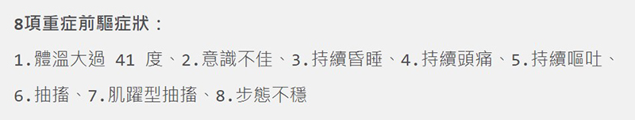
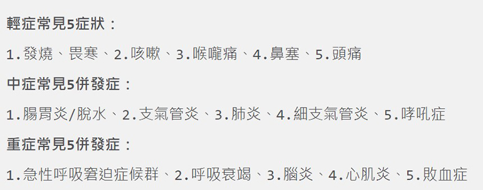

月號－哺乳育嬰站
月號－哺乳育嬰站根據國外經驗，兒童染疫多數都是無症狀、輕症居多，但國內這波疫情以來，不僅兒童染疫比例、中重症風險大幅超越國際經驗之外，也接連出現併發腦炎、敗血症等重症，已經造成多例病逝個案，讓家長們莫不膽戰心驚！ |
| 新冠病毒侵犯肺部、腦部 |
新冠病毒為何併發腦炎？林口長庚醫院兒科急診主治醫師吳昌騰解釋，機轉主要是病毒入侵鼻腔粘膜後，快速複製、繁殖，不僅限於呼吸道，透過血液系統、淋巴系統隨之進入肺部、腦部等。 只是過往認定兒童感染不是多數都是輕症嗎？台大兒童醫院院長黃立民指出，新冠病毒跟流感有點像，病毒攻擊呼吸道時沒那麼嚴重，但若是攻擊大腦，尤其在小小孩身上就變得難以預測。 |
| 注意腦炎重症前驅症狀，別讓遺憾發生 |
對此指揮中心醫療應變組副組長羅一鈞表示，為因應這波疫情中腦炎對兒童的影響，兒科醫學會與相關專家提出了共同的治療指引，提醒家長應注意「兒童腦炎重症前驅症狀。」 羅一鈞指出，小朋友如果染疫，家長需要特別意觀察孩子是否有重症前驅症狀，如果出現了 8 項重症前驅症狀，請家長務必立刻把小朋友帶去就醫評估，可以撥打 119，或者自行緊急送醫。並進一步解釋，體溫超過41度以上，表示中樞神經系統的體溫中樞已經失常，才會燒到如此高的溫度，必須留意病毒恐侵襲腦部；肌躍型抽搐過去是腸病毒特有的病徵，較容易出現在腿部，而在新冠病毒也出現相似症狀。 林口長庚紀念醫院兒童重症加護科主治醫師林建志表示，腦病變後，孩子會持續昏睡、嘔吐、意識不佳，甚至產生幻覺、抽搐，這些都是腦部被侵犯的症狀，家長要特別留意。而步態不穩，也是病毒侵犯到中樞神經的病徵之一。 若染疫後不幸進展到腦病變，腦病變的臨床表徵為意識、行為改變及精神混亂、抽搐、肢體麻痺，或是眼球往上看或亂轉、鬥雞眼、固定偏向一側等，都是常見神經學表現。 |
|  |
| 除了腦炎，也應小心其他染疫併發症 |
兒童染疫後，除了併發腦炎以外，衛福部疾管署在日前召開兒童新冠病毒感染會議中特別提出，心肌炎、哮吼症、多系統炎症徵候群等，也都是兒童染疫後該注意的併發症。 臺中榮總兒童心臟科主任詹聖霖建議，在兒童居家照護期間，要隨時監測體溫、計算每分鐘呼吸次數、觀察孩子活動力、記錄進食量和尿量、呼吸時有無胸凹現象、膚色是否發紫、肢體是否冰冷等，有任何變化都必須要提高警覺。 面對這波疫情人人自危，該怎麼保護好家中孩子？吳昌騰呼籲，符合接種疫苗的族群快接種疫苗，減緩病毒傳播速度；兒童到密集空間應配戴口罩，教導孩子勤洗手，髒手不摸眼口鼻。唯有全民做好防護，才能一起共度疫情難關！ |
|  |
| 資料來源 兒童染疫中重症 1 個都嫌多！不只「腦炎」 盤點兒童染疫併發症 – Heho親子 |